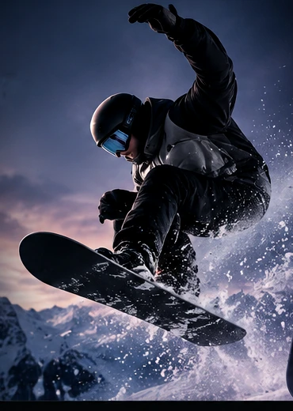
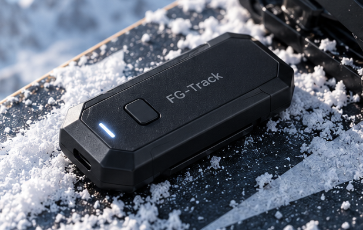
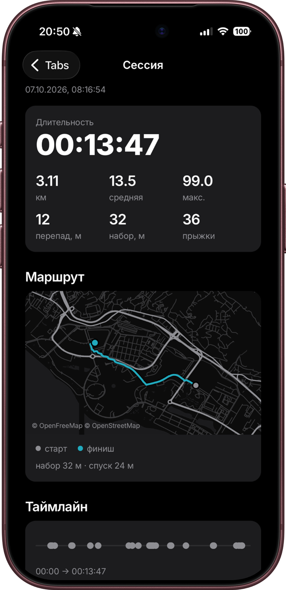
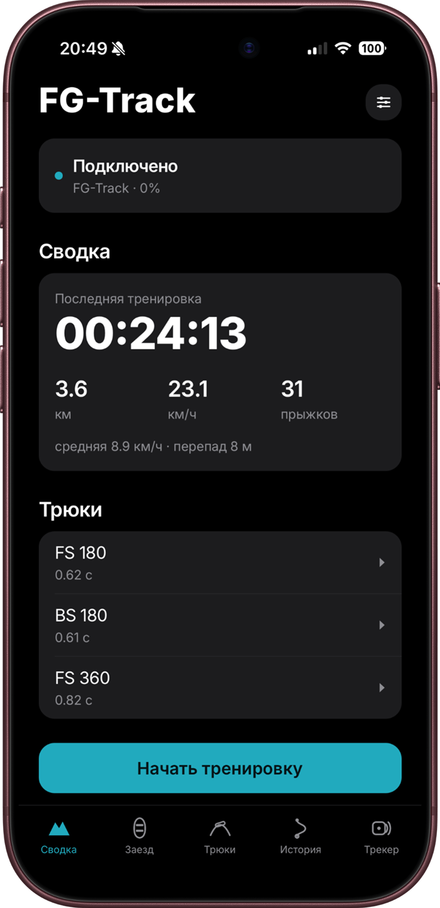
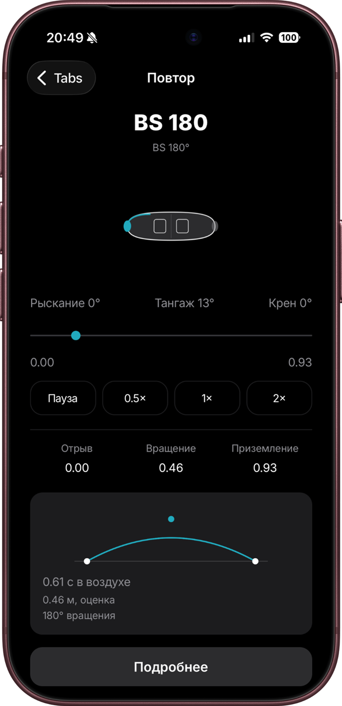
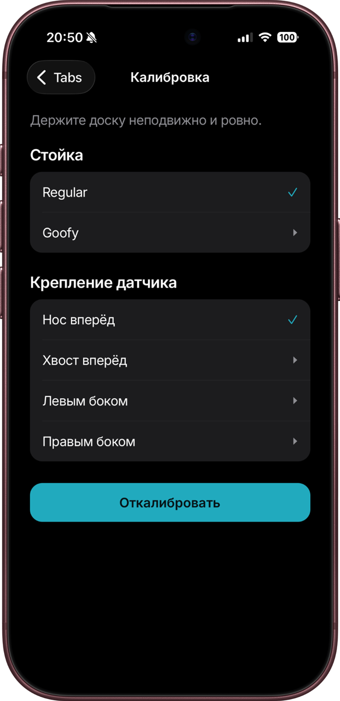
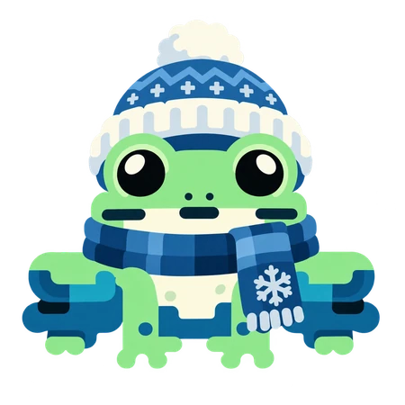

Live Ride
Время заезда, скорость по GPS, число прыжков, последний трюк, время в воздухе и сила приземления.


Компактный трекер для сноуборда, который фиксирует движение доски и помогает анализировать прыжки, вращения и результаты тренировок. Закрепи датчик на доске, подключи к смартфону и смотри, как ты катаешься.
Приложение находит прыжок по четырём состояниям. Первая версия работает без нейросети: конечный автомат и пороговые значения.
Три слоя устройства: питание, электроника и корпус. Никакого дополнительного оборудования на трассе.
250 мА·ч. Заряжается по USB-C.
Процессор ARM Cortex-M4 и датчик движения. Измеряют ускорения и вращения доски и передают их на смартфон по Bluetooth Low Energy.
Закрывает электронику и крепится на доску. Способ крепления ещё уточняется.

100 замеров движения в секунду
Небольшой датчик устанавливается на доску и измеряет её ускорения и вращения. Данные передаются на смартфон по Bluetooth, чтобы ты мог изучить движение после тренировки.
FG-Track работает в паре с мобильным приложением. Подключай устройство, записывай тренировки и изучай статистику после заезда.




Время заезда, скорость по GPS, число прыжков, последний трюк, время в воздухе и сила приземления.
Дистанция, максимальная и средняя скорость, время в воздухе, углы вращений и лента событий.
Выгрузка сессий в CSV и JSON. Режим отладки с графиками датчика движения.
Часы измеряют движение руки, а не сноуборда. FG-Track помогает понять, что произошло между отрывом и приземлением.
Распознавание вращений до 720° с учётом направления frontside и backside.
Анализ времени полёта и параметров приземления.
Запись маршрута, скорости, дистанции и длительности тренировки через GPS смартфона.
Выбери стойку и положение сенсора. FG-Track учитывает ориентацию датчика при измерениях.
Неважно, тренируешь первые 180° или работаешь над новым трюком. Важно понимать, что происходит на самом деле.
Коротко о том, как работает FG-Track.
Способ крепления для финальной версии ещё уточняется. Перед запуском мы покажем установку и результаты испытаний фиксации на доске.
Подтверждённой автономности для финальной версии пока нет. Опубликуем её после испытаний прототипа.
FG-Track — проект в разработке. Публикация в App Store и Google Play пока только запланирована. В скором времени выложим релиз приложения на GitHub и в магазины приложений.

FG-Track создаётся для тех, кто хочет лучше понимать своё катание. Устройство сейчас в разработке. Напиши команде, чтобы узнать о ходе разработки и будущем запуске.
Узнать о старте продаж